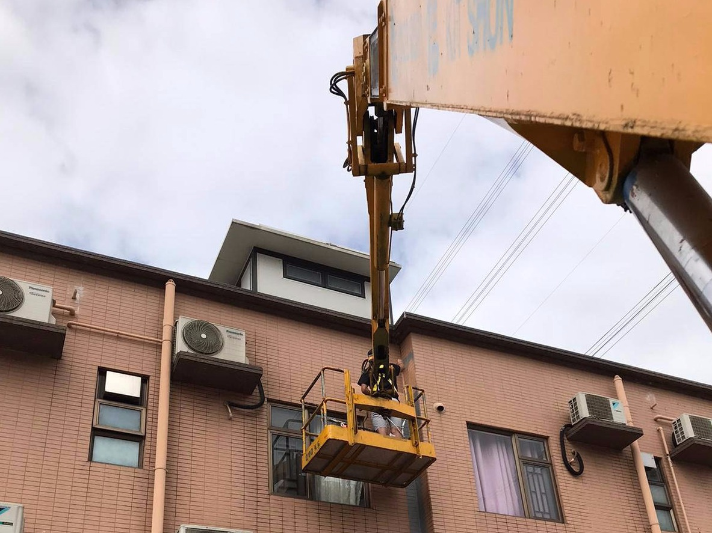

公司簡介
工程概述
天台防水工程
廁所防水工程
外牆防水工程
高壓打針灌漿
施工相片
天台防水工程
廁所防水工程
外牆防水工程
高壓打針灌漿
石屎剝落修葺
專業防水檢測
服務流程
防水資訊
聯絡我們
#
外牆漏水
夏天又到，雨季來臨，如果屋企一打風落雨，就外牆漏水，真係好麻煩。外牆防水係咪做得唔好呢？其實，外牆防水最大嘅問題就是長期暴晒受熱或者風吹雨打，令防水層冷縮熱脹，導致外牆漏水。建築材料老化同施工質量不良都係成因之一。外牆防水做得唔好，裂縫同排水系統設計不當，都可能引致外牆漏水。解決方法係修補裂縫、更換防水層，選用高質量嘅外牆防水材料，並且定期檢查同維護。做好外牆防水嘅注意事項包括：選擇優質材料、專業施工、注意天氣同施工安全。外牆防水係長期維護工作，記住定期進行外牆防水檢查，確保防水效果持久。總之，外牆防水係保障屋企乾爽嘅重要措施。做好外牆防水，可以避免外牆漏水及好多麻煩，確保屋企安全舒適。外牆防水真係唔可以忽視。
外牆漏水 7大原因大拆解

外牆防水維修方案
外牆防水塗層施工步驟
外牆防水注意事項
外牆漏水 7大原因大拆解
長期暴晒受熱或風吹雨打，外牆防水層因冷縮熱脹而受損，導致外牆漏水。
建築材料老化，水泥、磚塊和密封劑隨時間老化，導致外牆漏水。
施工質量不良，未按外牆防水標準施工或材料使用不當，防水層失效外牆漏水。
外力影響（地震或結構沉降），外力導致外牆出現裂縫，雨水導致外牆漏水。
排水系統設計或維護不當，雨水積聚在外牆附近，增加外牆漏水風險。
窗戶和門框接縫不密封，接縫處密封劑老化或損壞，引發外牆漏水。
防水層施工不當或缺失，外牆防水效果直接受影響，導致外牆漏水。
測試方法: 目測法及個案歷程分析(配合導電感應檢測方法及高清紅外線掃描方法) 水樣本分析 色水測試 噴灑水測試 微波濕度掃描方法 檢測雨量分析
外牆防水維修方案：
外牆防水重造（打拆起底）
外牆防水表層防水塗層
適用於已出現多處裂痕，現有防水層因老化或材料質量問題失效，無法有效防水，導致大範圍外牆漏水。專業的外牆防水承建商檢查外牆狀況，根據評估結果制定適當的外牆防水重建方案。重建過程涉及先移除磚面，拆除或更換舊的外牆防水層，然後進行新的防水層塗裝，以確保外牆長期的防水效果，解決外牆漏水問題。外牆防水的重要性在於保護建築結構免受雨水侵害，維持建築物的耐用性和安全性。
在進行外牆防水工程時，選擇適合的表層防水塗層能有效縮短施工時間，同時減少對客戶的影響。施工前必須嚴格確認外牆漏水的源頭、位置及擴展範圍，這是針對性進行修復和外牆防水處理的基礎。我們採用的防水塗層特別適合應用於外牆表面，能夠有效防止外牆漏水及雨水滲透。在選擇外牆防水材料時，要考慮到其耐候性、耐久性和維護便捷性，確保長期的防水效果和建築物的可靠性。
外牆防水重造（打拆起底）
施工步驟
1.將原有的外牆飾面（如磁磚、石材、漆料等）和防水層進行完全拆除，以準備基層的檢查和修復。
2.檢查拆除後的基層結構，修復任何發現的損壞或結構問題，確保基層穩固和平整。
3.將外牆防水底漆按比例混合。
4.用油掃或油轆塗刷第一層外牆防水層底漆，需確保整個表面均塗上，覆蓋外牆表面。
5.等待外牆防水層底漆乾涸後，以1mm的厚度塗刷第一層聚胺脂外牆防水物料。等待2-4小時後，以1mm的厚度，90度的方向塗刷第二層外牆防水物料。
6.完成整體工程後，進行外牆防水層的最終驗收和測試，包括水壓測試或其他必要的防水效果測試，以確保外牆防水層達到預期效果。
7.新造外牆飾面材料（如磁磚、石材等），確保安裝過程中無損壞和完整性。
外牆防水表層防水塗層
施工步驟
1.先確保外牆沒有鬆脫空鼓。
2.以高壓水槍，吸塵機等將外牆完全清潔好。（如有舊有外牆防水塗層需鏟除破損防水塗層）
3.將外牆防水底漆按比例混合。
4.用油掃或油轆塗刷第一層外牆防水層底漆，需確保整個表面均塗上，覆蓋外牆表面。
5.等待外牆防水層底漆乾涸後，以1mm的厚度塗刷第一層聚胺脂外牆防水物料。等待2-4小時後，以1mm的厚度，90度的方向塗刷第二層外牆防水物料。
6.完成整體工程後，進行外牆防水層的最終驗收和測試，包括水壓測試或其他必要的防水效果測試，以確保防水層達到預期效果。
外牆防水 - 注意事項！
基層處理： 在外牆防水施工前，得確保基層表面堅固，沒有粉化或剝離的現象。表面要清潔，沒有灰塵或油污，並且平整，沒有明顯缺陷或補痕，這樣防水層才能牢牢貼住。
防水層弱點補強： 對於牆面交接處和管道穿牆處這些弱點位置，需要進行補強，增加外牆防水層在角落處的韌性和抗裂性。防水層必須保持完整，任何裂痕或破損都可能導致外牆防水失效，導致外牆漏水。
基層表面裂縫： 如果基層有裂縫，要把裂縫鑿成V形，然後用外牆防水材料修補。這樣可以防止外牆防水層在裂縫處斷裂，確保外牆防水效果持久。
防水層底漆： 防水底油本身不是防水材料，而是一種輔料。它的作用是增強防水層與基層的附著力，讓外牆防水層更有效和持久，這對於外牆防水施工尤其重要。
外牆防水層必須分層施工： 防水層要分層、薄而牢固地施工，這樣可以確保內外部乾燥均勻，防止內部濕潤導致的龜裂問題導致外牆漏水，確保外牆防水效果。
保持表面乾燥： 在油性防水施工前，得確保表面乾燥，讓外牆水分完全釋出。施工前應測量基層濕度（根據防水材料生產商的指示，一般濕度應在10-15度以下），這樣防水層才能完全滲入細小毛孔，形成平整不起泡的外牆防水層。
檢驗防水施工質量： 最後，進行外牆射水試驗，檢查外牆防水層的完整性和有效性，確保一切正常，徹底解決外牆漏水。
需要搵師父度尺報價重建外牆防水嗎?
電話: 2384 4800
WHATSPP: 9161 4451
地址 : 葵涌華星街1-7號美華工業大廈7樓D1室
電
郵 : cs.winta@gmail.com
電話 : 2384 4800
網址 : www.wintahk.com
宏達防水工程公司 © Copyright 2024 - All Rights Reserved